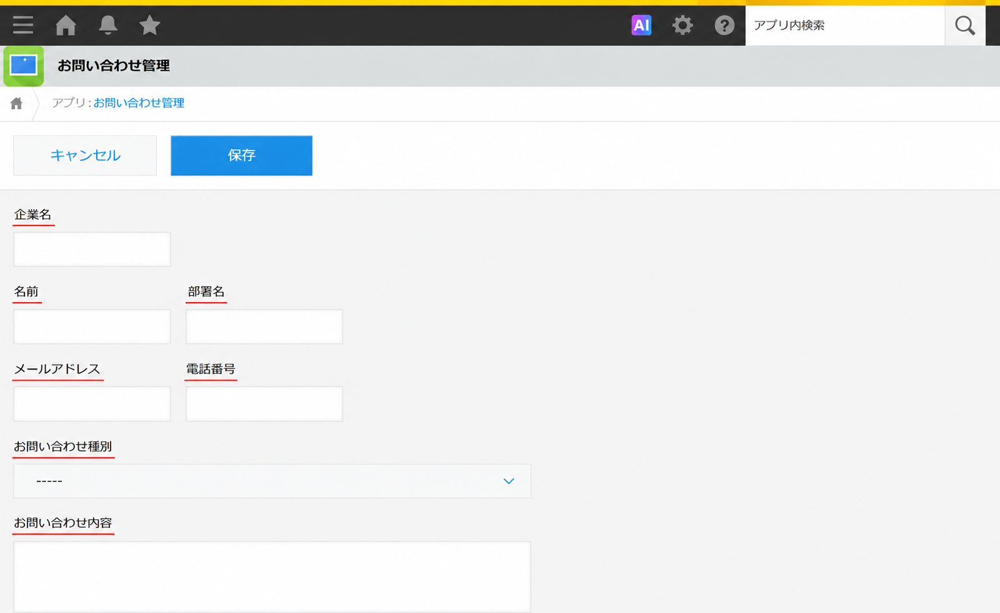
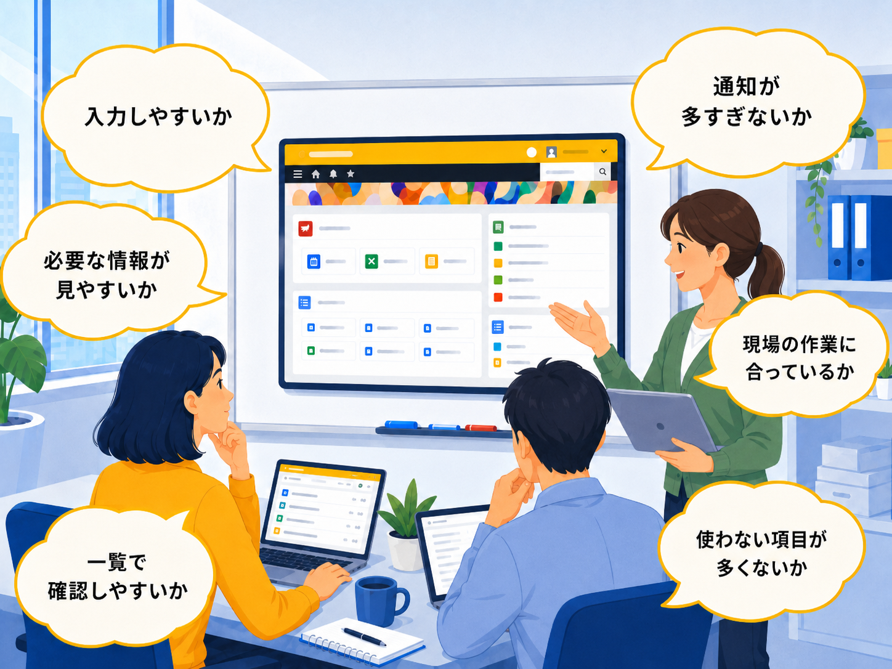
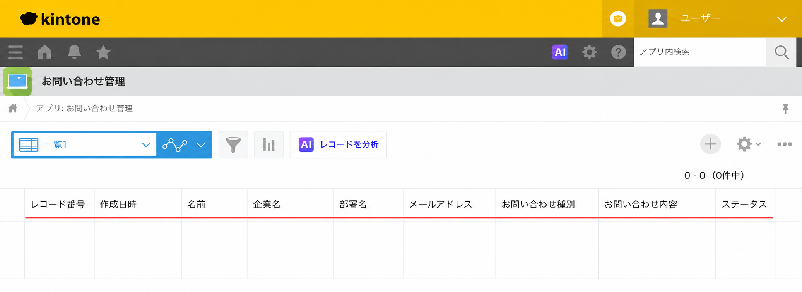

kintoneを使った業務改善の進め方を、現状把握からアプリ設計、運用定着まで解説します。
紙・Excel・メール管理に課題を感じる企業向けに、具体的な活用例も紹介します。
kintoneを使った業務改善とは
kintoneを使った業務改善で大切なのは、最初から大きなシステム改革を目指すことではありません。まずは、紙、Excel、メール、電話、口頭確認で行っている身近な業務を見直し、ムダや手戻りを少しずつ減らしていくことが重要です。
たとえば、次のような課題を感じていないでしょうか。
このような課題は、多くの企業で起こりやすいものです。特に中小企業や製造業、建設業、卸売業、サービス業では、現場ごとに業務の進め方が異なり、情報が分散しやすい傾向があります。
kintoneを活用すると、業務に合わせたアプリを作成し、情報の一元管理、進捗の見える化、通知、履歴管理がしやすくなります。
本記事では、kintoneを使った業務改善の基本的な進め方と、具体的な活用例をわかりやすく解説します。
kintoneを使った業務改善でできること
kintoneを使った業務改善とは、紙やExcel、メールなどで分散している情報をkintoneに集約し、業務の進め方を見直す取り組みです。
kintoneは、業務に合わせてアプリを作成し、情報を管理・共有できるクラウドサービスです。
問い合わせ管理、申請管理、案件管理、備品管理、期限管理など、さまざまな業務に合わせて活用できます。
業務改善とは、日々の業務にあるムダ、ミス、確認漏れ、属人化を減らし、よりスムーズに仕事を進められる状態にすることです。単に作業時間を短くするだけでなく、情報共有をしやすくしたり、対応状況を見える化したり、誰でも同じ流れで対応できるようにしたりすることも含まれます。
たとえば、次のような課題はkintoneで改善しやすい業務です。
| よくある課題 | kintoneで改善しやすいこと | |
|---|---|---|
| Excelの最新版がわからない | → | 情報を1つのアプリに集約する |
| メール依頼が埋もれる | → | 対応状況や担当者を一覧で確認する |
| 紙の申請書を探すのに時間がかかる | → | 申請内容や承認状況をデータで管理する |
| 期限管理が人任せになっている | → | 通知や一覧で期限を確認しやすくする |
| 担当者しか経緯がわからない | → | コメントや履歴で情報を残す |
このように、kintoneは業務そのものを一気に大きく変えるというよりも、まずは今ある業務を整理し、情報を見える化するための手段として活用できます。
kintoneを使った業務改善の進め方
kintoneを使った業務改善は、次の流れで進めると取り組みやすくなります。
ステップ1：現在の業務を洗い出す
まずは、現在の業務を洗い出します。いきなりkintoneアプリを作るのではなく、最初に「どの業務を改善したいのか」を整理することが大切です。
確認する項目は、次のような内容です。
誰が担当しているか
どのような情報を扱っているか
いつ、どのタイミングで作業しているか
紙・Excel・メール・電話のどれを使っているか
どこで確認漏れや手戻りが起きているか
たとえば問い合わせ管理であれば、受付方法、担当者の割り振り、対応状況の確認方法、完了報告の流れなどを整理します。業務の流れを見える化することで、kintone化すべき範囲がわかりやすくなります。
ステップ2：課題を見える化する
次に、現在の業務で困っていることを整理します。よくある課題には、次のようなものがあります。
入力漏れがある
確認漏れが起きる
同じ内容を何度も入力している
対応状況が担当者しかわからない
メールやチャットの中に情報が埋もれる
期限が近づいても気づきにくい
ここで大切なのは、「なんとなく不便」で終わらせないことです。「なぜ困っているのか」「どの業務に影響しているのか」「誰が困っているのか」まで整理すると、改善すべきポイントが明確になります。
ステップ3：kintone化する業務の優先順位を決める
すべての業務を一度にkintone化しようとすると、設計や運用が複雑になりやすく、現場にも負担がかかります。
まずは、効果が見えやすい業務から始めるのがおすすめです。
優先しやすい業務の例は、次の通りです。
発生頻度が高い業務
ミスや確認漏れが起きやすい業務
複数人で情報共有する業務
期限管理が必要な業務
顧客対応に関わる業務
Excelや紙での管理に限界を感じている業務
具体的には、問い合わせ管理、申請管理、備品管理、案件管理などは、kintoneを使った業務改善の第一歩として取り組みやすい業務です。
ステップ4：kintoneアプリの項目を設計する
kintone化する業務が決まったら、アプリに入れる項目を設計します。たとえば、問い合わせ管理アプリであれば、次のような項目が考えられます。

項目を設計するときは、最初から入力項目を増やしすぎないことが大切です。
管理したい情報をすべて入れようとすると、現場の入力負担が大きくなり、運用が続きにくくなることがあります。まずは必要最低限の項目から始め、運用しながら追加・修正していくと進めやすくなります。
ステップ5：小さく運用を始める
アプリを作成したら、まずは一部の部署や一部の業務で小さく運用を始めます。最初から全社展開を目指すよりも、実際に使いながら改善点を見つける方が、現場に合った形にしやすくなります。
運用開始後は、次のような点を確認します。

kintoneは、業務に合わせてアプリを見直しやすい点が特徴です。最初から完璧な形を作ろうとせず、使いながら改善していくことが大切です。
ステップ6：通知・一覧・コメント機能を活用する
kintoneで業務改善を進めるときは、情報を登録するだけでなく、通知・一覧・コメント機能も活用すると効果的です。
たとえば、次のような使い方ができます。

これにより、メールや口頭確認だけに頼らず、対応状況や履歴をチームで共有しやすくなります。確認漏れや属人化を防ぎたい業務では、特に役立ちます。
ステップ7：効果を確認して社内に定着させる
kintoneを導入して終わりではなく、運用後に効果を確認することも大切です。確認する項目の例は、次の通りです。
| 確認項目 | 見るポイント | |
|---|---|---|
| 作業時間 | → | 入力や確認にかかる時間が減ったか |
| 確認回数 | → | メールや電話での確認が減ったか |
| 対応漏れ | → | 未対応のまま放置される件数が減ったか |
| 情報共有 | → | 担当者以外も状況を把握できるか |
| 現場の声 | → | 使いやすい運用になっているか |
また、社内に定着させるためには、運用ルールも必要です。誰が入力するのか、いつ更新するのか、どのステータスを使うのか、アプリの見直しはいつ行うのかといったルールを明確にしておくことで、アプリが使われずに終わってしまうことを防ぎやすくなります。
kintoneで業務改善しやすい業務例
ここでは、kintoneで業務改善しやすい業務例を紹介します。
申請管理
紙やメールで行っていた申請をkintoneに集約することで、申請状況や承認状況を見える化しやすくなります。稟議、経費精算、備品購入申請、有給申請など、社内で頻繁に発生する申請業務に活用できます。
備品・期限管理
例えば製造業や建設業では、工具、車両、契約書、資格期限など、期限管理が必要な業務があります。kintoneで使用者、配布日、更新期限、担当部署などを管理すれば、期限が近いものを一覧で確認しやすくなります。通知を活用することで、期限の見落とし防止にもつながります。
案件・進捗管理
営業案件や社内プロジェクトの進捗管理にもkintoneは活用できます。顧客情報、案件内容、担当者、対応履歴、次回対応日、進捗状況などを一元管理することで、担当者以外も状況を確認しやすくなります。引き継ぎや情報共有をしやすくしたい場合にも向いています。
問い合わせ管理
ホームページやメールから届く問い合わせをkintoneで一元管理すると、対応状況、担当者、期限を一覧で確認しやすくなります。「誰が対応しているのか」「今どの状態なのか」「対応期限はいつか」が見えるため、対応漏れや二重対応の防止につながります。
kintoneを使った業務改善で気を付けたいこと
kintoneを使った業務改善では、次のような点に気を付けましょう。
最初から多くの業務をkintone化しようとする
最初から多くの業務を対象にすると、設計が複雑になり、運用も定着しにくくなります。まずは問い合わせ管理や申請管理など、効果が見えやすい業務から始めると進めやすくなります。
現場の意見を聞かずにアプリを作る
管理部門だけでアプリを作ると、実際の業務の流れに合わない場合があります。実際に入力する人、確認する人、承認する人の意見を聞きながら設計することが大切です。
入力項目を増やしすぎる
情報を詳しく管理しようとして項目を増やしすぎると、入力の負担が大きくなります。最初は必要最低限の項目で始め、運用しながら調整しましょう。
運用ルールを決めない
誰が入力するのか、いつ更新するのか、どのステータスを使うのかが決まっていないと、アプリが使われなくなることがあります。アプリ作成とあわせて、運用ルールも決めておくことが重要です。
kintoneを導入すること自体が目的になる
kintoneは業務改善のための手段です。導入すること自体が目的になると、何を改善したいのかが曖昧になってしまいます。まずは業務課題を明確にし、その解決方法としてkintoneを活用することが大切です。
作ったアプリを見直さない
業務の流れは、時間とともに変わることがあります。一度作ったアプリも、定期的に見直すことで、より使いやすい形に改善できます。
kintoneで業務改善を進めるときのポイント
kintoneで業務改善を進めるときは、次のポイントを意識すると取り組みやすくなります。
まずは小さな業務から始める
現場が入力しやすい設計にする
一覧、通知、コメントを活用する
実際に使う人の声を取り入れる
定期的にアプリを見直す
特に大切なのは、現場が使いやすいことです。どれだけ便利な仕組みでも、入力が面倒だったり、確認方法がわかりにくかったりすると定着しにくくなります。
また、Excelで管理している業務を全て廃止する必要はありません。まずは一部の業務をkintoneに移行し、運用しながら社内に広げていく方法もあります。
まとめ
kintoneを使った業務改善は、現状把握から始めることが大切です。進め方は、次の流れで考えると取り組みやすくなります。
1.現在の業務を洗い出す
2.課題を見える化する
3.優先順位を決める
4.アプリの項目を設計する
5.小さく運用を始める
6.通知・一覧・コメントを活用
7.効果を確認して社内に定着させる
紙、Excel、メールでの管理に限界を感じている場合、kintoneを活用することで、情報の一元管理や進捗確認がしやすくなります。
まずは、問い合わせ管理、申請管理、備品管理、書類期限管理など、身近な業務から見直してみてはいかがでしょうか。
kintoneを活用した業務改善をご検討中の方へ
「どの業務から始めたらいいか分からない」
「現場に定着する形で導入したい」
そんな課題があれば、お気軽にご相談ください。